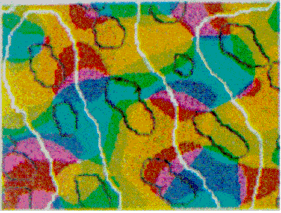

Global and local symmetry of the primary visual cortex: derivation of orientation preferenceDavid M. Alexander 1, Phil Sheridan2, Paul D. Bourke1, Otto Konstandatos3, James J. Wright1
1
Brain Dynamics Laboratory,
Mental Health Research Institute,
Melbourne, Vic, Australia Abstract We demonstrate that a combination of two transformations of the visual field are sufficient to account for the organisation of orientation preference in V1. Both these transforms are mappings of the hemi-retinal image, and are achieved by known connectivity in the visual system. The transformations are a global retinotopic mapping into the supragranular layers and a tiling of the supragranular layers with multiple local versions of the hemi-retinal image. The local mapping requires that the lateral connections in laminae 4A and 4B preserve the visuotopic ordering of the retinal hemi-field. The interaction of the two mappings accounts for both the local geometry of orientation preference and its global geometric organisation and for the formation of patchy intrinsic connections in the supragranular layers. The mappings described allow those features of the visual field which tend to be spatially contiguous (orientation, texture, colour, contrast) to be learned by neurons within V1. keywords: vision, neurophysiology, orientation preference.
1 Introduction
This paper presents a model of the organisation of the mammalian primary
visual cortex. The core proposition is the existence of two, distinct (but
topologically identical) mappings of the visual field into the primary visual
cortex. The first mapping is the classical retinotopic, global projection of
the visual field to V1, and the second is a local mapping visual field inputs,
multiple copies of which tile the supragranular layers of V1. Together these
two mappings define the local-global symmetry (LGS) model of V1. The
interaction between the two mappings supplies non-retinotopic response
properties such as orientation preference, and drives the formation of patchy
connectivity in the supragranular layers. The LGS model of the primary visual
cortex suggests there is a rather direct relationship between globally
represented objects (e.g. an oriented line) and various other response
properties (e.g. orientation preference) which have a local geometry.
The response properties of V1 are well catalogued. These properties have been mapped through single-cell studies (Hubel and Wiesel, 1968), metabolic transport studies (Tootell et al, 1988a; 1988b; 1988c) and optical imaging of the cortical surface (Blasdel, 1992; Blasdel and Salama, 1986). These studies have shown that V1 exhibits a distinctive tiling of various response properties (Blasdel, 1992). Swindale (1996) has described a set of canonical properties which a model of the geometry of the primary visual cortex should take into account. These properties include the spatial frequencies and organisation of: ocular dominance bands, cytochrome oxidase (CO) blobs, singularities and iso-orientation regions. To Swindale's list we may add: temporal frequency selectivity, patchy intrinsic connectivity and cortical point spread. Layer 4C of the macaque primary visual cortex has a strict retinotopic organisation (Blasdel and Fitzpatrick, 1984; see figure 1.1). This layer receives the vast bulk of inputs from the retina, via the thalamus (Blasdel and Lund, 1983). In the macaque, each hemi-retina is distorted, through a complex logarithmic mapping, to an almond shaped mapping in layer 4C of V1 (Tootell et al, 1988a). This distortion is of fundamental importance to the functionality of the visual recognition system, allowing computational simplification for operations such as rotation and scaling in two dimensions (Schwartz, 1980; Sheridan and Alexander, 1997). Receptive field studies (Hubel and Wiesel, 1977) reveal an orderly, though less exact retinotopic organisation in the supragranular layers. Receptive field sizes are also larger in the supragranular layers. Neurons in the upper layers of the primary visual cortex are organised into repeated units, roughly 800 um wide and 600 um high, called hypercolumns (Hubel and Wiesel, 1968). Each hypercolumn spans an entire range of orientation tunings and a left and right ocular dominance set. Located along the centres of ocular dominance bands are cytochrome-oxidase (CO) blobs. The blobs appear to CO staining because of their higher metabolic activity (Horton and Hubel, 1980), and are responsive to colour, high contrast and low spatial frequencies. Interblob regions are more selective for low contrast and high spatial frequencies (Tootell et al, 1988b; Tootell et al, 1988c). The geometry of orientation preference reveals three predominant features: singularities, linear zones and saddle regions (Blasdel, 1992; see figure 1.2). Orientation preference changes continuously around points, or singularities. These roughly circular `pinwheels' traverse 180o of all possible orientation preference. Between adjacent singularities, running parallel to the ocular dominance bands, are regions in which orientation preference changes slowly and continuously. These regions are called linear zones. Other regions between singularities show local minima of orientation preference in orthogonal directions: so-called saddle points. Singularities surrounding saddle-points form mirror images of each other, through both a vertical reflection line and a horizontal one. The double reflections have the effect of allowing orientation selectivity to change continuously between adjacent pinwheels. Singularities and CO blobs both tend to lie along the centres of ocular dominance bands (Livingstone and Hubel, 1984; Bartfield and Grinvald, 1992; see figure 1.3). Data from the macaque shows that in up to 15% of cases singularities and CO blobs coincide, but that the CO blobs tend to lie in between the singularities, along the axis of the centre of the ocular dominance band (Bartfield and Grinvald, 1992); although this finding has been questioned (Crair et al, 1997). In the cat, more systematic data shows a closer relationship between CO and singularities; the average distance between ocular dominance centre point and nearest singularity was found to be 138um. It is not known whether the incidence of CO blob and singularity overlap varies over the surface of V1, for example, whether it is more prevalent in the foveal region. In the cat, ocular dominance bands have a clear oval appearance, rather than the elongated bands found in the macaque (Crair et al, 1997). This difference seems to be related to degree of binocularity in the two species. If macaques have one eye sutured from one week postnatally, the resultant shrinkage in the representation of the sutured eye results in ocular dominance bands more closely resembling the ovoid patches in found in the cat (Horton and Hocking, 1997). Interestingly, from the point of view of the LGS model, the shrinking oval patches perfectly surround individual CO blobs. These various data together suggest that in both the cat and the macaque, there is a regular tiling of response properties, the width of an ocular dominance band, with CO blobs lying at the centre of each tile.
3 Connectivity of Granular and Supragranular Layers Anatomically, the mapping into layer 4C occurs via the Lateral Geniculate Nucleus (LGN) in the thalamus (Blasdel and Lund, 1983). In layer 4C, two streams of inputs from the magnocellular and parvicellular layers of the LGN are recombined to form an orderly retinotopic representation (Blasdel and Fitzpatrick, 1984). The inputs from the LGN project to layer 4C in discrete blocks (see figure 1.4). Projections from the parvicellular layers of the LGN form dense terminal boutons in lamina 4CB. The size of these dense terminating patches is approximately the width of an ocular dominance column, 400 um. The terminating input patches to 4CB lie exclusively within one or other ocular dominance band. Magnocellular inputs project to 4Ca in finer patches of approximately 100 um. The supragranular layers receive direct input from 4C, as well as indirect inputs via the infragranular layers (Lachica et al, 1993; Miller, 1996). In addition, a large percentage of their inputs arrive via lamina 4A and 4B (Blasdel et al, 1985). Lamina 4C[beta] projects to the supragranular layers largely via lamina 4A. Lamina 4A is a major source of inputs to the supragranular layers, in the form of diffusely spreading axons from 4A spiny stellates (Blasdel et al, 1985; Yoshioka et al, 1994). Lamina 4B receives most of its input from 4Ca. These inputs in turn project strongly to the supragranular layers in narrow foci, directly above each point in 4B. Some coarse fibres project into the supragranular layers up to a distance of 375 um (Blasdel, 1985). Of particular interest for the model presented in this paper are the lateral projections of lamina 4B spiny stellates within 4B itself. These efferent axons project laterally up to 4.5 mm in the macaque (Blasdel et al, 1985; see figure 1.5). A similar pattern of projecting fibres is found in the squirrel monkey (Rockland and Lund, 1983). The lateral connections show periodic accumulations of denser terminal fibres every 375-400 um (Blasdel et al, 1985; Rockland and Lund, 1983). These patches of connections form a radial pattern with a similar spatial periodicity to the CO blobs (Rockland and Lund, 1983). The fibres within 4B extend further than any other class of intrinsic fibres within the primary visual cortex. Only cells within layer 4B send out this class of long range lateral fibres and, at mid- to long-range distances from the cell body, all terminating boutons are within 4B itself. Most of the fibres within 4B are preferentially horizontal, rather than vertical (Rockland and Lund, 1983). The set of connections within 4B is ideally suited to carry out the mapping, proposed in this paper, of the retinotopic representation in the granular layers to a local mapping in the supragranular layers. The chief requirement of this mapping is that each coarse-grained (~ 400 x 300 um) retinotopic location in lamina 4C connects to a point in every local map (~ 400 x 300 um) in the supragranular layers. This mapping occurs through polysynaptic pathways within lamina 4B. We also propose that lamina 4A might have similar properties, perhaps showing more clearly outside the foveal region of V1. Studies using injections of retrograde and antereograde tracer have revealed underlying regularities in patchy intrinsic connections within the supragranular layers of V1 (Blasdel et al, 1985; Malach et al, 1993; Rockland and Lund, 1983; Bosking et al, 1997). These connections traverse the grey matter parallel to the cortical surface in the supragranular layers and project to discrete patches or targets, sometimes several millimetres from the site of tracer injection. Use of these tracer techniques in conjunction with other imaging techniques has revealed that patchy connections tend to prefer targets with the same response properties. This has been shown for orientation selectivity (see figure 1.6) and ocular dominance (Malach et al, 1993) and CO/interblob zones (Yoshioka et al, 1996). The spatial pattern of these patchy intrinsic connections is therefore closely related to the spatial pattern of other response-property systems discussed thus far. Recent work on the postnatal development of area 17 in the Ferret has revealed that the patchy intrinsic connections form from an initially diffuse set of random connections in the upper layers (Ruthazer and Stryker, 1996). The formation of patchy connections occurs before the presence of visual input and before the appearance of response properties associated with the supragranular layers, for example orientation selectivity. We therefore assume these connections reflect some primary transformation of early visual inputs, upon which later fine tuning of response properties is based. This paper describes two mappings of visual inputs through the granular and supragranular layers, and how the interaction of the two mappings drives the formation of patchy intrinsic connections in the supragranular layers. It has recently been shown, in the primary visual cortex of the tree shrew, that the patchy intrinsic connections are not perfectly radial, but form an elongated pattern (Bosking et al, 1997; see figure 1.7). The axis of elongation corresponds to the preferred orientation of the injection site. In other words, if tracer is injected into a site in the supragranular layers with a preferred orientation of theta, the pattern of patchy intrinsic connections overlies a global, retinotopic representation of a line passing through that point and having an orientation theta.
4 Local-Global Symmetry mapping Alexander et al (1997) have noted strong analogies between the global properties of the hemi-retinal image and the response properties in the supragranular layers. These are given in table 1. In particular, we assume these analogies with the hemi-retinal image apply to a geometrical unit in the supragranular layers corresponding to 1/4 of a hypercolumn. Such a unit includes one CO blob and one singularity and has the approximate dimensions in the macaque of 400 um x 300 um (Blasdel, 1992). The present model of V1 introduces a few simplifications into the visual system, and will not explicitly deal with ocular dominance, the cortical magnification factor, temporal frequency, contrast and colour selectivity. The resulting simplified model focuses on the development of orientation selectivity, and aims to explain data from mammals such as the macaque, the tree shrew and the ferret. A more complete model is in development. Global Mapping: The global retinotopic input-mapping from the hemi-retinal image to the granular layers (in particular layer 4C) can be approximated by the function of a complex variable supplied by Schwartz (1980):
where
and a and [beta] take the values 0.333 and 6.66 respectively. This function has a close fit to the mapping found in the macaque primary visual cortex (Schwartz, 1983). The mapping described by equation 1 is illustrated in figure 2. A semi-circle on the complex plane, z, is mapped to an almond shape on the complex plane, G (z). Since the mapping into the granular layers is variable across species, to approximate the mapping into the granular layers we could equally choose
or
where a <= 1. In the case of the tree shrew, the retinotopic input-mapping into the granular layer involves little distortion of the hemi-retinal image (Bosking et al, 1997) and so could be approximated by an identity mapping. The LGS model does not depend on the exact mapping chosen for the granular layers. The retinotopic representation of lamina 4C reaches the supragranular layers through direct connections and through interlaminar loops via the infragranular layers. This description of the global mapping is in terms of a manifold (i.e. continuous planar geometry with reals as coordinates), but the input map can be better approximated using a discretized planar map. The LGS model requires that the influence of the retinotopic representation on the supragranular layers is at a rather coarse resolution, similar to the blocks of inputs arriving in layer 4C. We therefore assume that a `pixel' of retinotopic input to the supragranular layers, ~ 400 x 300 um, serves to drive the formation of local maps, of the same dimensions, in the supragranular layers. This discrete version of the model is made explicit in the implementation section to follow. A further approximation in the description of the global mapping concerns the exactness of visuotopy in the supragranular layers. Receptive field mapping has shown that the retinotopic receptive field structure of the supragranular layers is not as exact at that in lamina 4C. This fits with anatomical data suggesting somewhat diffuse inputs into the supragranular layers and larger receptive fields for the upper layers (Blasdel and Fitzpatrick, 1984). For the sake of simplification, in this description of the LGS model of V1, we have assumed that the retinotopic input-mapping between lamina 4C and the supragranular layers preserves perfectly the retinotopic relations. Local Mapping: A second stream of inputs reaches the supragranular layers via laminae 4C then 4A and 4B. For simplicity of expression, we describe the local input-mapping to the supragranular layers in terms of the hemi-retinal visual field, rather than the representations described in equations 1-4. We assume the local input-mapping to the supragranular layers can be approximated by the mapping of a complex variable
where
This mapping may also be expressed as
where mu is a scaling factor which shrinks the size of the map (M >> 1). This mapping has the effect of mapping a semi-circle to a full circle. In the case of n=0, it maps equally spaced lines of iso-eccentricity to radii that increase as a square of the eccentricity. If n=1, equally spaced lines of iso-eccentricity are preserved. If n=1.5, the pattern described for n=0 is reversed. The mapping described in equation 5 is illustrated in figure 3. A set of rays--of angles spanning 180o--converging on the fovea, is mapped by this function to a circular pinwheel. Multiple copies of this input-mapping tile the supragranular layers. According to Schwartz (1980) there are approximately 3,000 hypercolumns in the macaque primary visual cortex. This leads to an estimate of 12,000 tilings of the local mapping described by equation 5. The most critical feature of the mapping is that it is a local mapping. It allows each retinotopic point to be associated with a local representation of the whole visual field. The next most important feature of this mapping is that it maps a semi-circle to a circle, doubling the angles. This approximates, in the local mappings, the shape of experimentally imaged singularities. Anatomically, we propose the local input-mapping described by equations 5-7 occurs through the lateral connections formed by spiny stellates in lamina 4A and 4B (Rockland and Lund, 1983). These lateral connections recombine the retinotopic image in a series of steps to form the desired local input-mapping to the supragranular layers. This is consistent with the observations that 1) the longest lateral fibres are in 4B, and 2) most fibres within 4B terminate at great distances within 4B. This anatomy is consistent with the required one to all mapping. The relevant anatomy is summarised in figure 4. The critical prediction of the LGS model is that the lateral connections in laminae 4A and 4B preserve the topology of the retinal image, while replicating that topology many-fold over the surface of V1. At present, there is no direct anatomical evidence that the mapping through layers 4A and 4B is topology preserving, although this assumption is open to empirical verification or falsification. Local-Global Symmetrical Geometry: Each point on the supragranular layers can be defined in terms of a scale-symmetrical coordinate geometry. Each point is a function of the pair (zG,zL) where zG specifies, in discrete complex coordinates, which local input-map the point falls within, where
If there are M tilings of the local input-map, then
since the rounded shape of the primary visual cortex means it does not fill the complex plane of zG entirely. The term zL specifies the coordinates of the point within that local input-map. Since this point is a target neuron, zL is also in discrete complex coordinates. We express the inverse of the global input-mapping function (e.g. the inverse of equation 1) as G-1(z) and the inverse of the local input-mapping function (e.g. the inverse of equation 5) as L-1(z). Each point, (zG,zL), in the supragranular layer receives input from two points in the visual field, one through the global retinotopic input-mapping, point g:
and another through the local input-mapping, point l:
where g and l are complex variables and are points on the hemi-retina. The input into a given point of the supragranular layers, I (zG,zL), is simply
where Ig is the total afferent input from point g and Il is the total afferent input from point l.
5 Interaction Between Maps The global input-mapping described by equations 1-4 supplies the visuotopic properties of the supragranular layers. Other response properties of the local map representations are formed through an interaction of the local input-maps with the global retinotopic input-mapping into the supragranular layers. Here we distinguish between the local input-map, supplied by equations 5-7 and the local representational maps (or local response property maps) which form as a result of interactions between the input maps, other cortical anatomy and Hebbian learning driven by visual stimuli. Representation of Orientation: The response properties of local representational maps form through hebbian learning mechanisms as a result of correlated neuronal activity. The LGS mapping allows each coarse-grained (~ 400 x 300 um) retinotopic input into the supragranular layers to become associated with a local mapping (also ~ 400 x 300 um) of the entire hemi-field. Since these maps are hypothesised to form only when both sets of inputs (i.e. Ig and Il in equation 12) are active, and even adjacent local maps receive different Ig's, each local representational map in the supragranular layers learns a different set of patterns. In the general case, each local map in the supragranular layer `sees' a different set of stimuli. For each Ig, the supragranular layer also receives inputs, Il, from every point in the visual hemi-field. Activity from the retinotopic inputs Ig reinforces patterns of activity in these local mappings of the visual field. Only those points in the visual field whose activity reliably coincides with the point g will form strong connections within the map driven by Ig. The local representation which forms will be a version of the visual field which is visually relevant to the Ig supplying retinotopic input to that local map. In the case of line orientation preference, each local map `sees' only the subset of line orientations relevant to that local map. The subset of line orientations which pass through the hemi-retinal point, g, comprises all the oriented lines which produce supragranular activity in the local map driven by that Ig. The local map, insofar as its response properties are due to the interaction of Ig and Il, will therefore learn responses to only the subset of oriented lines passing through the point g. Each local map learns a subtly different set of lines orientations, depending on its retinotopic location. The conjunction of the local mapping of an oriented line, and the global mapping of the point it passes through, is termed a point/orientation conjunction. A point/orientation conjunction describes the relevant pattern of activity, or representation, for line orientation preference. Consider a line on the retina between the points la and lb, moving at a constant speed towards a point g. Provided the velocity of the line is the appropriate one for the delays through laminae 4A and 4B, the signals from the set of points between la and lb will reach the local map at zG at the same time that the signals from g reach zG. Since L(z) is a conformal mapping, each unique line orientation, theta, of a line la to lb passing over g will form a unique set of activations, zLa to zLb within zG. The double mapping has the effect of adding an orientation label to each `pixel' in the global image of the line. Formation of Patchy Intrinsic Connections: A critical feature of the input-mapping given in equations 5-7 is that it simultaneously performs both a contraction of the layer 4C representation to each local input-map in the supragranular layers and an expansion of the layer 4C representation so that any point in the hemi-field becomes spread out over many input-maps in the upper layer representation. That is, each local input, Il, reaches every version of the local map. This property leads to an explanation for the formation of patchy intrinsic connections in the supragranular layers. We assume that the transform described in equations 5-7 occurs from at least from the time of early post-natal development, that is, prior to earliest visual experience. We further assume that patchy connections in the upper layers are formed from an initial random connectivity. These assumptions are consistent with recent findings on the development of lateral connections in the ferret primary visual cortex (Ruthazer and Stryker, 1996). The lateral connections in the supragranular layers are refined through the detection of correlated activity, between adjacent local maps, in neurons receiving inputs from both local and global input-maps. This is illustrated in figure 5. A short line is represented in both the global mapping of the supragranular layers and the local mappings which tile the supragranular layers. Where activity in the two adjacent local-map representations coincides, patchy connections form. Connections are assumed to form between any two of these representations which have correlated activity over time through a simple hebbian learning mechanism. The mappings described suggest how the primary visual cortex recognises oriented lines in different retinotopic locations. The LGS mapping uniquely identifies any line by position and angle, since for a given orientation, there is only one line which passes though that retinotopic position. The patchy intrinsic connections link together the set of point/orientation conjunctions, each of which individually defines the line. The patchy connectivity therefore allows a further avenue of disambiguation, possibly adding a binding label through phase synchronisation of the neuronal activity (Singer, 1993). Synchronised activity between linked point/orientation conjunctions enhances response properties to oriented lines, thus generalising the response property to regions beyond a particular retinotopic location. In the general case, the model predicts that V1 can learn stimulus features which are predictable on the basis of spatial contiguity. The interaction, in the supragranular layers, between a specific retinotopic input, zG, and the local map inputs from the entire visual hemi-field leads to a unique pattern of activation at that retinotopic point. Properties such as line orientation, spatial frequency, contrast and colour tend to be spatial contiguous and so will reliably activate particular patterns of activity in adjacent local representations. Through this reliable co-activation, hebbian learning drives the formation of lateral connectivity between the active sites in these adjacent maps, producing generalised response properties. Further Assumptions, Predictions and Limitations: A few additional assumptions are required to reproduce the geometric pattern of orientation preference, at the scale of individual singularities, hypercolumns and beyond. To retrieve the typical singularity shape, of 180o of orientation preference traversing 360o of a circle, responses to oriented lines of a local map must favour orientations within a range of approximately 180o. This is the distortion provided by equation 5. Systematic mapping of direction preference in the primary visual cortex of the ferret reveals that direction preference is also most often segregated into local maps with only a 180o range of direction preference (Weliky et al, 1996). Imaging of orientation preference shows that adjacent singularities are usually mirror images of each other. The tiling of multiple singularities shown in figure 6 illustrates this mirroring, revealing linear-zones and saddle points. Reflection of the adjacent tiles has the effect of allowing orientation preference to change continuously between singularities. It does not alter the functionality of the LGS mapping, which only relies on a local representation of the visual hemi-field being mapped to each global retinotopic point. Figure 7 illustrates the relationships between CO blobs and singularities predicted by the LGS model. The model predicts that singularities and CO blobs should coincide in the region on the global retinotopic map which represents the centre of the field of vision. This is because the CO blobs are hypothesised to be the local map representations of the central field of vision and local-mappings in this region are activated by the set of orientations passing through the central field of vision. This contrasts to the local-map representations in the periphery. The set of orientations passing through these retinotopic locations miss the central field of vision and hence, in their local map representations, the CO blobs. This may explain the variation in findings in the literature, regarding the positioning of CO blobs and singularities (Livingstone and Hubel, 1984; Bartfeld and Grinvald, 1992; Crair et al, 1997). A simplification in this analysis of orientation preference has been the nature of the retinotopic inputs into the supragranular layer-hypothesized to be connections from 4CB via 4A. In reality these connections are diffuse, rather than point-like. Local map representations have been described in this paper as though the representation which forms is that one which is `predictive' for the global retinotopic location over which it lies. It seems more likely that local representational maps form through the interaction of the intracortical loops between the granular, supragranular and infragranular layers (Miller, 1996). This would provide the model with additional degrees of freedom for targets of retinotopic inputs to the supragranular layers. Both the local input-mapping and the global input-mapping would then be subject to modification through hebbian learning, depending on how well they predict activity in the loop through the granular and infragranular layers. This additional complexity suggests a source for the variation found empirically in local maps; they are rather more `noisy' than the perfect geometry of the LGS model would suggest.
6 Implementation of Model We now describe an implementation of the model which illustrates the global and local spatial ordering orientation preference, and its relationship to the development of intrinsic patchy connections. The aim of the implementation is not to cosmetically reproduced the exact geometrical features of response properties found in a particular animal. The additional distortions of the mappings are therefore not included in these simulations. The simulations show that orientation preference develops as a function of the two mappings when a simple network of artificial neurons is trained in an unsupervised fashion with moving lines as stimuli. The simulation also shows the development of intrinsic patchy connections which have the same local and global geometry as is found empirically. The mappings of the visual field are described in this section in terms of a discrete hexagonal lattice, named the Spiral Harmonic Mosaic (SHM). The SHM is a discretized subset of the complex plane. The SHM consists of a hexagonal lattice, with each hexagon having a designated positive integer address (Sheridan, 1996). The numbered hexagons form clusters, or super-hexagons, of size 7n; these self-similar super-hexagons tile the plane in a recursively modular manner (Alexander, 1995). Images can be projected into the SHM, with each pixel in the image associated spatially with a particular hexagon and algebraically with its address. An algebraic operation, called Spiral Multiplication, allows scaling and tiling of an image. For more details, see Sheridan (1996). We define mappings from the granular layers to the supragranular layers in terms of SHM. Here we ignore, for the sake of simplicity, the shape of the visual field (hemi-retina) and the shape of the retinotopic mapping in layer 4C. Likewise we ignore the geometric distortions of the local mappings, so here 360o of moving oriented lines will project directly to 360o local maps. The retina, granular layers and supragranular layers are represented in these simulations as a 74 superhexagon. Each hexagon can be interpreted as roughly the scale of a minicolumn, 30um. Images are projected onto the granular layer at a resolution of 72, so that each image is made up of 72 `pixels' or discrete retinotopic locations. This approximates the coarseness of resolution of inputs into the granular layers from the LGN (Blasdel and Fitzpatrick, 1984). Moving lines are projected onto the retinal superhexagon, and these lines sweep across the entire retina at a constant speed of approximately 1/2 pixel per stimulus step; the total time for one sweep across the model retina taking ~30 time-steps. A random angle of orientation is chosen for each sweep of the line. The first mapping, which supplies the global map of retinotopic inputs, is an identity mapping.
where Vj and Sj are SHM integer addresses, on the simplified granular and supragranular layers, respectively. wGj is the connection weight, for this global mapping, from the jth address in the granular layers to the jth address in the supragranular layer. This global mapping is assumed to occur through the interlaminar loops of connections which leave layer 4C and project to the infragranular layers and then back up to the supragranular layers (Miller, 1996). The second mapping, which supplies a local copy of the entire visual field to each global retinotopic point, is simply a Spiral Multiplication of the input image.
where wLj is the connection weight, for this local mapping, from the jth address in the granular layers to the M jth address in the supragranular layer and where M is an integer multiplier which scales the image and tiles multiple copies over the surface of the model supragranular layers. In these experiments we set M to 49 (100 in base 7) which has the effect of producing 49 smaller images of the visual field, each taking an area 1/49th of the original image. There is a delay of 1 time-step for these local input-map connections, due to the polysynaptic pathway for these connections in the real anatomy. The input mapping for local inputs is assumed to occur through lamina 4A and 4B. In both cases of input mappings, the SHM transforms are interpreted as direct and indirect connectivities from one cortical location to another. A third set of connections are intrinsic to the supragranular layers. Initially, these connections are from every supragranular hexagon to every other one:
wij is the connection weight, for this intrinsic mapping, from the ith address in the supragranular layers to each of the j addresses in the supragranular layer. The weight, wij, of each of these intrinsic connections is initially drawn from a random distribution (except in the case of i = j, where wij is permanently set to 0), with the initial sum of weights, to each hexagon, j, being 1. The activation of each hexagon in the supragranular layers is updated in two steps. First the contribution of the two input mappings to the supragranular layers is calculated:
where aSj and aVj are the activations of the jth cells of the supragranular and granular layers, respectively. The inputs to the supragranular layers are then added to the contribution of the intrinsic connections:
where ASj is the total activation of the hexagon from all sources. The intrinsic patchy connections are modified according to the Hebbian learning rule:
where
and [Delta]w is the update increment for the (excitatory) intrinsic connections. This was set to 0.01. The threshold activation for Hebbian learning to occur, [Phi], was set to 2. This mean that a hexagon had to receive inputs from both input mappings, and both pre- and post-synaptically, in order for learning to take place in the intrinsic connections of the supragranular layer. The activation of each hexagon was kept to a maximum of 3 by the a weight scaling function:
and where
Thus there are three sets of connections: the global input-map; local input-map, and; intrinsic patchy connections, with each set contributing a maximum of 1 unit of activation to each hexagon. There were 10,000 simulation time-steps in total, or ~300 sweeps of oriented line stimuli.
7 Results The activity patterns for two simulation time-steps are shown in figure 8. The figure shows the global mapping of the oriented line, and the multiple local maps of this same input activity. Points where the two input-mappings overlap have increased activation due to the strengthening of intrinsic patchy connections between pairs of these sites. Also shown in figure 8 is the orientation preference map. This is produced in a similar manner to empirical studies with animals. The network is stimulated with a systematic range of angles, and a vector map of responses is produced. The angle of the summed vectors is shown as a false colour map. An intrinsic connectivity map is also shown for one hexagon. This is equivalent to a tracer injection in empirical studies with animals. The figure shows all connections from a particular hexagon to all other hexagons to which it has a strong connection . The figure shows three different results, each of which matches data found in animals. First, the interaction of the two input-maps results in a map of orientation preference which reproduces the essential features of orientation preference in the primary visual cortex. Each global retinotopic location forms a local map which has a pattern of responses to oriented stimuli. The map contains spatially ordered orientation response properties for all oriented lines which pass through that retinotopic point. This reproduces the essential functional properties of the map of orientation preference shown in figure 1.2. Second, the interaction of the two input-mappings drives the development of intrinsic patchy connections. The intrinsic connections are strengthened only between hexagons with similar orientation preferences. Other connections are reduced to 0 weight by the competitive scaling process. This result reproduces the finding of orientation specificity for intrinsic patchy connections found empirically, as illustrated in figure 1.6, confirming also that the pattern of connections can be formed through a simple Hebbian learning mechanism.Third, the global pattern of these patchy connections overlies the visuotopic representation of a line which passes through the site of tracer injection and has on orientation equal to the orientation preference of the site of tracer injection. This matches data from the Tree Shrew, as illustrated in figure 1.7 The model suggests very specifically the function of V1. It takes as inputs a set of active retinotopic locations. By creating a map within a map, points of high activity serve as feature labels. Information is supplied to later processing stages that, not only is this retinotopic point active, but it is active because of a particular line of orientation, theta. Each retinotopic location learns which other points in the visual field are relevant to its own activation. Adjacent local maps will tend to learn similar representations, and so will reinforce each other. Those parts of adjacent local maps which are reliably coactive are reinforced through the intrinsic patchy connections. The simulation does not cosmetically reproduce the local geometry of orientation preference. It also does not deal with other response properties such as temporal frequency preference. This later simplification is the reason why the patchy intrinsic connections are elongated rather that true round patches. The simulation also deals with time in a rather simplistic fashion, both in terms of neuronal dynamics and connection delays. A more complete model will allow, for example, intrinsic patchy connections to be predictive of next immediate inputs; i.e. to anticipate movement of a line. 8 Conclusions This paper relies on three assumptions to explain orientation selectivity in the primary visual cortex. These are: a global, topology-preserving mapping from the retina to the supragranular layers via the laminae 4C and the infragranular layers (uncontroversial); a local, topology-preserving mapping from the retina to the supragranular layers via laminae 4C then 4A and 4B; and, the formation of patchy intrinsic connections and orientation preference response properties through correlated activity in the two mappings. Orientation, texture, colour, contrast tend to be spatially contiguous elements of the visual field. The LGS mapping of visual inputs in V1 allows precisely these properties of the visual field to be learned as response properties. The local mapping to the supragranular layers makes the contents of the entire visual field available for association with each retinotopic location in the supragranular layer. Patchy intrinsic connections link these response properties at nearby retinotopic locations, which is possible due to their spatial contiguity. Further description of the model will treat temporal frequency preference. Extension of the model to response properties such as colour selectivity and direction preference follow from the general case in a straight-forward manner. The local mappings described by equations 5-7 bears correspondences to the ice-cube model of Hubel and Wiesel (1977). Both assume the uppers layers are tiled with a regular map of the feature space. The LGS model has the additional features that it 1) directly suggests the function of known anatomical connections, 2) explains how the response properties are created. The model assumes that the geometry of V1 serves to organise multiple response properties into two dimensions. It differs from other models of V1 geometry which, rather than mappings, use simulated annealing or other relaxation procedures to achieve this dimension reduction (Durbin and Mitchison, 1990; Swindale, 1992). The latter models have multiple free parameters (Swindale, 1996). By contrast, the LGS model of V1 contains a limited number of assumptions and no arbitrary parameters. Acknowledgements The research was supported by the Australian Research Council.
References Alexander D.M. (1995) Recursively Modular Artificial Neural Networks, Ph.D. Thesis, Macquarie University, Sydney, Australia.
Alexander D.M., Sheridan P., Bourke P.D. and Konstandatos O. (1997) Global and local similarity of the primary visual cortex: mechanisms of orientation preference, Proceedings HELNET97.
Bartfeld E. and Grinvald A. (1992) Relationships between orientation-preference pinwheels, cytochrome oxidase blobs, and ocular-dominance columns in primate striate cortex, Proceedings of the National Academy of Sciences USA, 89, 11905-11909.
Blasdel G.G. and Lund J.S. (1983) Termination of afferent axons in macaque striate cortex, Journal of Neuroscience, 3(7), 1389-1413.
Blasdel G.G. and Fitzpatrick (1984) Physiological organization of layer 4 in macaque striate cortex, Journal of Neuroscience, 4(3), 880-895.
Blasdel G.G., Lund J.S. and Fitzpatrick D. (1985) Intrinsic connections of macaque striate cortex: axonal projections of cells outside lamina 4c, Journal of Neuroscience, 5(12), 3350-3369.
Blasdel G.G. and Salama G. (1986) Voltage-sensitive dyes reveal a modular organization in monkey striate cortex, Nature, 321, 579-585.
Blasdel G.G. (1992) Orientation selectivity, preference, and continuity in monkey striate cortex, Journal of Neuroscience, 12(8), 3139-3161.
Bosking W.H., Zhang Y., Schofield B. and Fitzpatrick D. (1997) Orientation selectivity and the arrangement of horizontal connections in tree shrew striate cortex, Journal of Neuroscience, 17(6), 2212-2221.
Crair M., Ruthazer E.S., Gillespie D.C. and Stryker M.C. (1997) Ocular dominance peaks at pinwheel center singularities of the orientation map in cat visual cortex, Journal of Neurophysiology, 77, 3381-3385.
Durbin R. and Mitchison G. (1990) A dimension reduction framework for understanding cortical maps, Nature, 343, 644-647.
Horton J.C. and Hubel D.H. (1980) Regular patchy distribution of cytochrome oxidase staining in primary visual cortex of the macaque, Nature, 292, 762-764.
Horton J.C. and Hocking D.R. (1997) Timing of critical period for plasticity of ocular dominance columns in macaque striate cortex, Journal of Neuroscience, 17(10), 3684-3709.
Hubel D.H. and Wiesel T.N. (1968) Receptive fields and functional architecture of the monkey striate cortex, Journal of Physiology (London), 195, 215-243.
Hubel D.H. and Wiesel T.N. (1977) Functional architecture of macaque monkey visual cortex, Proceedings of the Royal Society (B), 198, 1-59.
Livingstone M.S. and Hubel T.N. (1984) Anatomy and physiology of a color system in the primate visual cortex, Journal of Neuroscience, 4, 309-380.
Malach R., Amir Y., Harel M. and Grinvald A. (1993) Relationship between intrinsic connections and functional architecture revealed by optical imaging and in vivo targeted biocytin injections in primate striate cortex, Proceedings of the National Academy of Sciences USA, 90, 10469-10473.
Miller R. (1996) Neural assemblies and laminar interactions in the cerebral cortex, Biological Cybernetics, 75, 253.
Rockland K.S. and Lund J.S. (1983) Intrinsic laminar lattice connections in primate visual cortex, Journal of Comparative Neurology, 216, 303-318.
Ruthazer E.S. and Stryker M.P (1996) The role of activity in the development of long-range horizontal connections in area 17 of the ferret, Journal of Neuroscience, 16(22), 7253-7269.
Schwartz E.L. (1980) Computational anatomy and functional architecture of striate cortex: a spatial mapping approach to perceptual coding, Vision Research, 20, 645-669.
Schwartz E.L. (1983) Cortical mapping and perceptual invariance: a reply to Cavanagh, Vision Research, 23 (8), 831-835.
Sheridan, P. (1996) Spiral architecture for machine vision, Ph.D. Thesis, University of Technology, Sydney.
Sheridan P. and Alexander D.M. (1997) Invariant transformations on a space-variant hexagonal grid, Proceedings of Vision, Recognition, Action: Boston.
Singer, W. (1993) Synchronization of cortical activity and its putative role in information processing and learning, Annual Review of Physiology, 55, 349-374.
Swindale N.V. (1992) A model for the coordinated development of columnar systems in primate striate cortex, Biological Cybernetics, 66, 217-230.
Swindale N.V. (1996) The development of topography in the visual cortex: a review of models, Network, 7, 161-247.
Tootell B.H., Switkes E., Silverman M.S. and Hamilton S.L. (1988a) Functional anatomy of the macaque striate cortex. II. Retinotopic organization, Journal of Neuroscience, 8(5), 1531-1568.
Tootell B.H., Silverman M.S., Hamilton S.L., Switkes E. and De Valois R. (1988b) Functional anatomy of the macaque striate cortex. V. Spatial Frequency, Journal of Neuroscience, 8(5), 1610-1624.
Tootell B.H., Silverman M.S., Hamilton S.L., De Valois R. and Switkes E. (1988c) Functional anatomy of the macaque striate cortex. III. Color, Journal of Neuroscience, 8(5), 1569-1593.
Weliky M., Bosking W.H. and Fitzpatrick D. (1996) A systematic map of direction preference in primary visual cortex, Nature, 379, 725-728.
Yoshioka T., Levit J.B. and Lund J.S. (1994) Independence and merger of thalamocortical channels within macaque monkey primary visual cortex: anatomy of interlaminar projections, Visual Neuroscience, 11, 467-489.
Yoshioka T., Blasdel G.G., Levit J.B. and Lund J.S. (1996) Relation between patterns of intrinsic lateral connectivity, ocular dominance, and cytochrome oxidase-reactive regions in macaque monkey striate cortex, Cerebral Cortex, 6, 297-310.
Figure 1 Pictorial summary of the physiology of the primary visual cortex relevant to the LGS model (see captions and sections 2 and 3 of text for details).
Global Retinotopy in Macaque: A flickering stimulus (left) and its retinotopic representation in layer 4C of V1 (right), revealed through CO staining. Reproduced from Tootell et al (1988a). Orientation Preference in Tree Shrew: Complete map of orientation preference (left) and detail of singularities, linear zone and saddlepoints (right). Reproduced from Bosking et al (1997).  Tiling of response properties in Macaque: CO blobs (black lines), ocular dominance borders (white lines) and orientation preference (colour) tile the surface of V1 with related spatial frequencies. Reproduced from Bartfeld and Grinvald (1992). LGN Inputs to Layer 4C in Macaque: Thalamic inputs reach layer 4C in discrete blocks. Dotted lines show the borders of ocular dominance bands, with terminal boutons skipping every other band. Reproduced from Blasdel and Lund (1983). Lateral Fibres within Lamina 4B in Macaque: Staining with Horseradish Peroxidase shows long range lateral fibres extending within lamina 4B. Reproduced from Blasdel et al (1985). Orientation Specificity of Intrinsic Patchy Connections in Tree Shrew: Tracer injection (white dots) into a site of particular orientation preference shows axons terminating at sites of similar orientation preference (black lines). Reproduced from Bosking et al (1997). Global Pattern of Intrinsic Patchy Connections in Tree Shrew: Tracer injection into a site with particular orientation preference shows the elongation of fibre distribution in the direction corresponding to the retinotopic representation of a line of that orientation preference. Reproduced from Bosking et al (1997). Figure 2 Global mapping of the hemi-retinal image into the supragranular layer of the primary visual cortex. This mapping is given in equation 1. Left of figure shows the hemi-retinal field which is mapped to the supragranular layers, shown in the right of figure. The distortion of the hemi-retinal image is shown by black lines. The point f, where the converging black lines meet, is the fovea and has the z coordinates (0,0). The mapping is global, that is, it covers in a single mapping the entire area of V1. The mapping of a set of oriented bar stimuli is shown by coloured rays. Each coloured ray, converging on point g, represents the set of all possible moving, oriented bars which travel along that ray towards point g. A 0o bar is shown in purple.
Local mapping of the hemi-retinal image into the supragranular layers of the primary visual cortex. This mapping is given in equation 5, n=1. Left of figure shows the hemi-retinal field which is mapped to the supragranular layers, shown at right of figure. The distortion of the hemi-retinal image is shown by black lines. The point f, where the converging black lines meet, is the fovea and has the z coordinates (0,0). The mapping is local, that is, it tiles the area of V1 with multiple small copies of the z-plane. The mapping of a set of oriented lines is shown by coloured lines. Moving bars are represented the same as in digram 2, save that the speed of the moving bar has to be appropriate for the transmission delays within 4A and 4B in order for the local map representation to form (see section 5 of text).
Anatomy of V1 relevant to the LGS model. Two streams of inputs reach the supragranular layers. One mapping, via lamina 4C then the infragranular layers, supplies a global retinotopic mapping. A second stream of inputs, via 4C then 4A and 4B, supplies a local mapping of the visual hemi-field. The black circles in lamina 4A and 4B represent the dense patches of terminating fibres seen empirically.
Schematic representation of the formation of intrinsic patchy connectivity. A short, oriented line (shown in red) is mapped according to the LGS model of V1. The left hand column shows the mapping from hemi-retina to the granular and supragranular layers. Right of figure shows a magnified section of the line in the supragranular layers and the intersecting local maps. Each point/orientation conjunction uniquely defines the line by position and angle. Patchy connectivity forms between pairs of the point/orientation conjunctions, through a hebbian learning rule (shown by black arrows).
Tiling of the supragranular layers with multiple copies of the hemi-retinal image. Adjacent tilings of the local map are reflected about either a vertically or horizontally oriented axis. The upper part of the image shows tiling shows linear zones extending vertically, between columns of singularities. The lower part of the image shows saddle-points between singularties. The only difference between the two tiling patterns is that, in the upper portion of the image, every second row is translated in the horizontal direction by one tiling.
Predicted relationships between singularities (colour) and CO blobs (grey) at different retinotopic locations. A. A set of oriented lines which pass through the centre of the fovea (left) will create a local supragranular map, located in the foveal region of V1 (right), in which the singularity and CO blob coincide (middle). B. A set of oriented lines which miss the fovea (left) will create a local supragranular map, located in the parafoveal region of V1 (right), in which the singularity and CO blob do not coincide (middle).
A
Simulation of orientation preference in the LGS model. Above: Pattern of activation during two different stimulus presentations. Grey areas show the influence of either the local or global inputs. Red areas indicate activation due to both global and local input-mappings and the intrinsic patchy connections. Below: False colour map of orientation preference. Imposed upon this is the set of intrinsic connections (thin black lines) from hexagon 54 (thick black lines). The patchy connections project to sites of similar orientation selectivity. The global pattern of these patchy connections overlies the visuotopic representation of a line which passes through hexagon 54 and has on orientation equal to the orientation preference of hexagon 54.
|